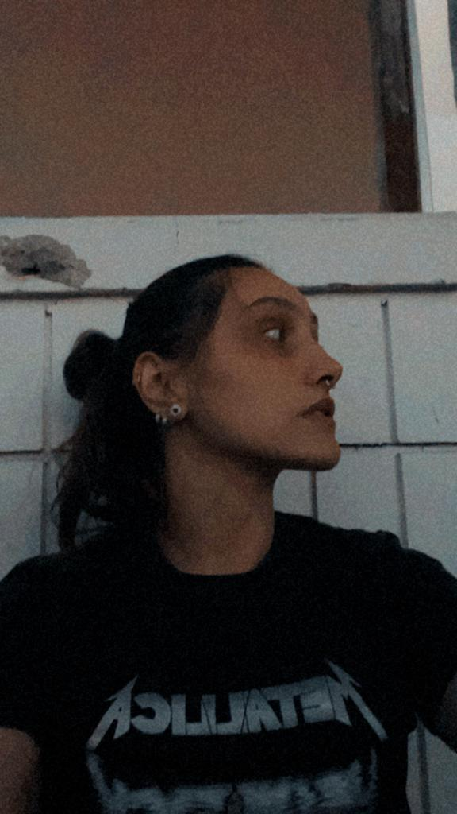

Nina Piedade Ferrari

Seja muito bem-vinde!
Me chamo Nina, você pode me chamar pelos pronomes Ela/Dela.
Sou uma paulista formada em música pela Unicamp (Universidade estadual de Campinas), barista e futura desenvolvedora web.
Nasci no interior de São Paulo em Itapetininga mas atualmente resido no Canadá. Hoje vivo no -35oC trabalhando como barista e estudando na Trybe.
Habilidades no desenvolvimento web:
Unix & Bash
Git & GitHub
HTML e CSS
Habilidades Gerais
- Fluente em inglês
- Comunição oral e escrita são coisas que adoro desenvolver
- A pontualidade é britânica
- Frequência poderia ser meu último nome
- Aprender na prática é o meu caminho
- Não tenho medo de trabalho duro e dou o máximo que faço em tudo
Habilidades Extras
- Sou cantora de vida e formação
- Toco violão, ukulele, me viro na guitarra, piano e na bateria
- Tenho uma boa memória fotográfica
- faço diversos tipos de bebidas diferentes ao mesmo tempo e sou uma das baristas mais rápidas de onde trabalho
- Consigo decorar melodias e reproduzi-las quase instantanêamente
- Percebo desafinação de longe
- Decoro com facilidade qualquer coisa relacionada com meu hiper-foco
Se quiser me adicionar sou nova por aqui ;)
Nina Piedade Ferrari